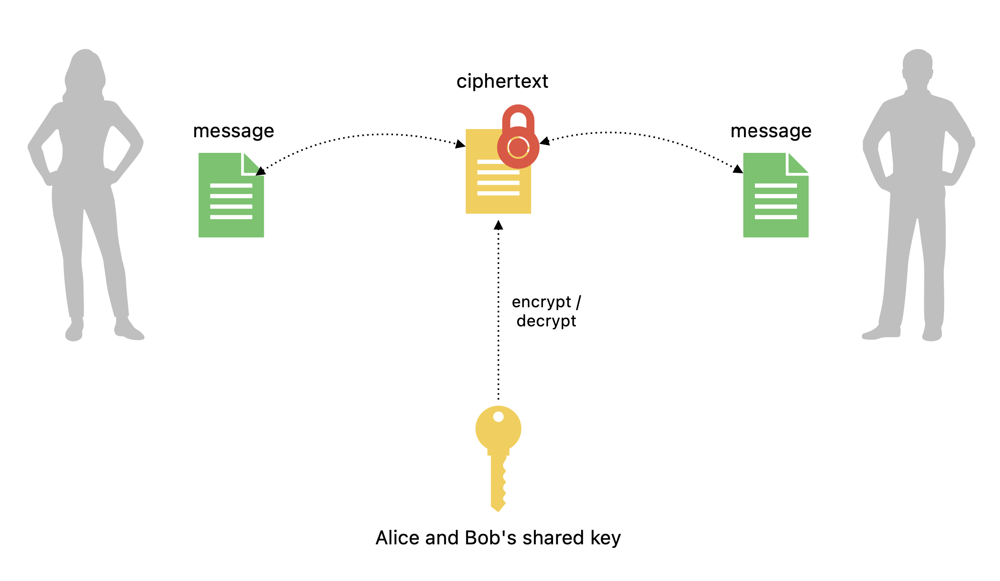
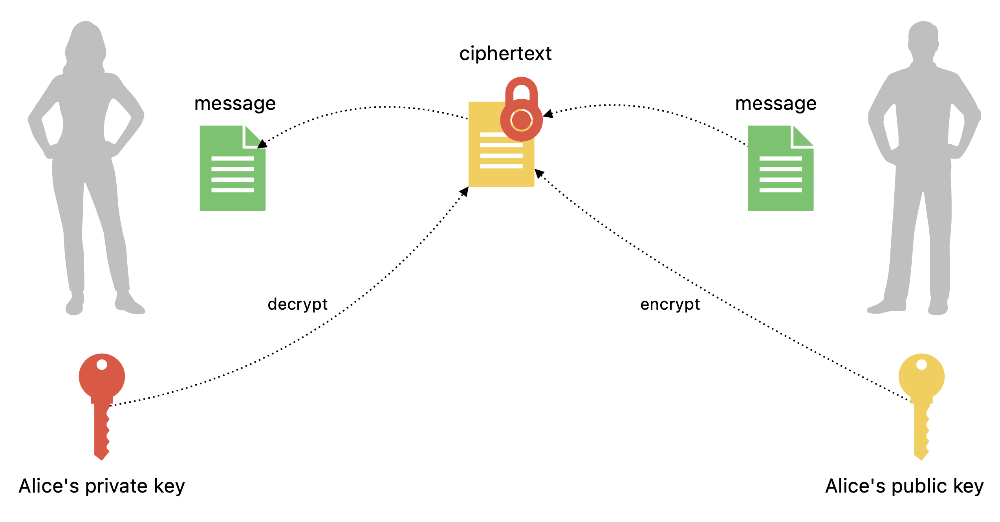

Symmetric encryption
Asymmetric encryption
Quantum threats
$\mathbf{Z}$ basis
$
\begin{bmatrix} 1 \cr 0 \end{bmatrix} = \ket{0} \rightarrow
$ maps to bit 0
$
\begin{bmatrix} 0 \cr 1 \end{bmatrix} = \ket{1} \rightarrow
$ maps to bit 1
$\alpha\ket{0} + \beta\ket{1} \rightarrow
$ superposition

Example: factoring 15
- 1. Set $a = 13$
- 2. Find order $r = 4$
- 3. Calculate:
$p = gcd(170, 15) = 5$
$q = gcd(168, 15) = 3$

5 and 3 are factors of 15.
Shor's algorithm relies on inverse Quantum Fourier Transform used for function order finding. QFT is exponentially faster than any classical alternative.

Probability of finding a result in a 4-bit data set with executions of steps on a quantum computer.
Classically we need 8 steps, on quantum computer ~2.8 steps.
What's next?
Quantum security
$\mathbf{X}$ basis
$
\begin{bmatrix} \frac{1}{\sqrt{2}} \\ \frac{1}{\sqrt{2}} \end{bmatrix} = \ket{+} \rightarrow
$ maps to bit 0
$
\begin{bmatrix} \frac{1}{\sqrt{2}} \\ -\frac{1}{\sqrt{2}} \end{bmatrix} = \ket{-} \rightarrow
$ maps to bit 1
$\alpha\ket{+} + \beta\ket{-} \rightarrow
$ superposition

$\mathbf{Z}$ basis
$\mathbf{X}$ basis
In 1984, Charlie Bennett and Gilles Brassard published the first quantum key distribution protocol, which became known as BB84.
This is considered to be the birth of the field of quantum cryptography.
Because arbitrary quantum states cannot be cloned, an attacker, 🦹♀️ Eve, would need to measure the qubits to steal information.
She must guess between $\mathbf{Z}$ and $\mathbf{X}$ bases.
👧🏻 👦🏼 Alice and Bob need to compare half of their resulting bits. If there are mismatches, they detected an attacker.